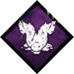

初心者向けドクターのオススメパークや立ち回り方
ドクターの基本情報
| ステータス | |||
|---|---|---|---|
| 移動速度 | 4.6m/s | 脅威範囲 | 32m |
| 背の高さ | 高い | 難易度 | 難しい |
| ドクターのティーチャブルパーク | |||
|
圧倒的存在感 |
あなたの存在そのものが、底知れない恐怖を呼び起こす。自分の脅威範囲内の生存者が非効率効果に苦しむ。
効果を受けた生存者のアイテム消耗率が80/90/100%増加する。 |
||
|
観察＆虐待 |
接近に慎重さを、診察に恐怖を。
生存者を追いかけているとき、脅威範囲が8メートル増加する。生存者を追いかけていない場合、脅威範囲が8メートル減少し、視界が3/5/10度拡大される。 視界増加は重複しない。 |
||
|
オーバーチャージ |
進歩への憎しみから力を得る。
発電機破壊アクションで発電機を過充電させる。次にその発電機に接触した生存者はとてつもなく難しいスキルチェックに直面する。スキルチェックが失敗した場合、発電機の進行度が3/4/5%追加で減少する。 スキルチェックが成功した場合、発電機は進行しないが、発電機の爆発は回避される。 |
||
| ドクターの特殊能力 | |||
|
カーターの電光 |
ドクターの特殊アビリティショック療法または放電爆破を生存者に命中させると、生存者の狂気度が上昇し、最終的には狂気のステータス効果を与え、その効果が次第に強くなる。
狂気度Ⅰ： 生存者が1度だけ叫び声を発して、ドクターにその位置が判明する。スキルチェックの結果と方向に少し影響する。 狂気度Ⅱ： 生存者が1度だけ叫び声を発して、幻覚のドクターの形で幻覚症状を覚える。スキルチェックの結果と方向にそこそこ影響する。 狂気度Ⅲ： 生存者が断続的に叫び声を発して、幻覚のドクターの形で幻覚症状を覚える。スキルチェックの結果と方向にとてつもなく影響する。生存者は無事に正気を取り戻すまで、治療・修理・破壊工作・開錠・浄化のアクションを行うことができない。正気を取り戻すアクションを完了した生存者は狂気度Ⅰに戻る。 特殊アビリティ：ショック療法 能力ボタンを長押しするとショック療法を実行し、目の前の地面に広い範囲で感電攻撃を解き放つ。ショック療法が命中した生存者の狂気度は上昇し、実行中のアクションが即座に中断される。ショック療法によって忘却のステータス効果は即座に無効化する。 特殊アビリティ：放電爆破 アビリティ発動のボタンを長押しすると放電爆破を実行し、ドクターの脅威範囲内にいる生存者全員に叫び声を上げさせ、狂気度は上昇する。放電爆破はクールダウン中には発動できない。放電爆破によって忘却のステータス効果は即座に無効化する。 |
||
オススメのパーク構成
初心者オススメパーク
初心者でも入手しやすいキラー共通と、ドクターのティーチャブルから選出しました。
|
オーバーチャージ |
進歩への憎しみから力を得る。
発電機破壊アクションで発電機を過充電させる。次にその発電機に接触した生存者はとてつもなく難しいスキルチェックに直面する。スキルチェックが失敗した場合、発電機の進行度が3/4/5%追加で減少する。 スキルチェックが成功した場合、発電機は進行しないが、発電機の爆発は回避される。 |
|

ずさんな肉屋 |
あなたは獲物のどこを攻撃すれば出血が多くなるかわかる。通常攻撃が命中した生存者に重傷と出血のステータス効果を与える。出血で生存者の出血頻度が少し/そこそこ/かなり増加する。
ずさんな肉屋による出血および重傷効果は、生存者が完全に回復すると解除される。 |
|
無慈悲 |
あなたはメイン武器での通常攻撃に失敗したあと、素早く復帰できる。攻撃失敗時のクールダウンが20/25/30%減少する。 |
|
呪術：誰も死から逃げられない |
希望に根付く呪い。生存者たちの脱出が目前に迫ったとき、あなたは呪いのトーテムの力によって駆り立てられる。
脱出ゲートが通電したとき、もし無力なトーテムがマップ上に残っていれば、この呪いが適用される。 この呪いが発動中、
|
|
囁き |
あなたはエンティティの言葉が少し理解できる。生存者から48/40/32メートル以内にいると、時々エンティティの囁きが聞こえるようになる。 |
|
苦悶の根源 |
あなたから発せられる恐怖は尋常でない長距離でも相手を捉える。脅威範囲が22/24/26%増加する。邪悪カテゴリのアクションで獲得するブラッドポイントが100%増加する。 |
この中でも、特に『ずさんな肉屋』や『無慈悲』がオススメです。
『ずさんな肉屋』の重傷効果は、サバイバーの回復速度に影響が出ます。通常攻撃を当てると、回復速度が落ちて遅延効果になります。また、出血の効果は、負傷や瀕死状態での出血量が多くなります。サバイバーを追う時の血の跡での追跡がしやすくなります。
『ずさんな肉屋』はこれらの効果があるので、汎用性が高いパークとなっています。
よく攻撃が空振りしてしまう方は、『無慈悲』を付けていきましょう。攻撃が空振りした時、クールダウンが入ってしまいます。そのクールダウンを減少させてくれるので、復帰が早くなります。これを付けて攻撃を当てる練習をしていきましょう。
『オーバーチャージ』は、発電機遅延系パークとして持っていきましょう。蹴った発電機に対して、難しいスキルチェックが発生するパークです。
ドクターの狂気付与で、難しくなったスキルチェックをさらに難しくすることができます。しかし、ある程度なれてきたサバイバーはミスをすることが少なくなっていきます。スキルチェックが成功すると、ほぼ遅延効果は得ることができません。そのため、最初はこれを採用しつつ、『呪術：破滅』や『イタチが飛び出した』を取得しましょう。
『呪術：誰も死から逃げられない』(以下『ノーワン』)は、通電後に効果が出ます。一撃でダウンをとることができ、さらに足も速くなる、一発逆転の可能性があるパークです。全滅を目指したいという方にはオススメです。
『ノーワン』がなくても、通電前に全滅することができる、または全滅にこだわっていないという方は、他のパークを採用しても構いません。
索敵用パークに『囁き』をオススメしました。このパークはキラー共通なので、取得もしやすいパークです。
このパークはtier3まで上げることをオススメします。tier3にすると、『囁き』が反応する範囲は32mとなります。つまり、ドクターの通常の脅威範囲内となります。そのため、これが反応していれば、必ず誰かは自分の脅威範囲内にいることになるので、「放電爆破」が必ず当たります。
最初に放電爆破を使用するときや、最後２人以下になった時の索敵に大いに活用することができます。tierを上げれば上げるほど、索敵の精度が上がるので、採用する場合は優先的にtierを上げましょう。
『苦悶の根源』は、脅威範囲を広げるパークです。いわゆる「爆音ドクター」と言われる構成となっています。
tier3まで上げたら、脅威範囲は約40mになります。「鎮静」アドオンを付けるとさらに広がります。
この「爆音ドクター」は、脅威範囲を広げて、「放電爆破」をより遠くまで当てて多くのサバイバーの狂気度を上げる目的があります。多くのドクターを使用しているプレイヤーは、この「爆音ドクター」の構成です。
また、邪悪カテゴリーのBPを上げることもできるので、BP稼ぎをしやすくなります。
ドクターの立ち回り方
ドクターの大まかな戦法
放電爆破を当てて強制的にサバイバーの位置をあぶりだす
ドクターの特殊アビリティである「放電爆破」を発動すると、自身の脅威範囲内にいるサバイバーを叫ばせることができます。放電爆破は、索敵に特化しているので積極的に使っていきましょう。ただし、「放電爆破」は60秒のクールダウンがあります。アドオンによってこのクールダウンを短くすることもできます。
また、この放電爆破を当てるとサバイバーの狂気度が１上がります。後述する妨害にもとても有効な特殊アビリティとなっています。
狂気度を付与しサバイバーの行動を妨害
「放電爆破」や「ショック療法」を当てると、サバイバーの狂気度が上がります。レベル３まで狂気度を付与することができれば、発電機修理や治療、破壊工作等ができなくなります。
レベル３まで狂気度付与されたサバイバーは、狂気度を下げる行為をする必要があります。この行為をさせることで、サバイバーの行動を間接的に妨害することができます。
また、狂気レベルを１あげるために「放電爆破」なら１回、「ショック療法」なら２回当てる必要があります。
チェイス中のショック療法
チェイス中、窓枠や板がある付近で「ショック療法」を使いましょう。「ショック療法」が当たった後2.5秒間は、板・窓枠越えや板倒し、デッドハード発動ができなくなります。
しかし、「ショック療法」を当ててこれらの効果が出るまでに、タイムラグが生じます。そのため、「ショック療法」が当たってすぐは、これらのアクションができてしまいます。「ショック療法」を正確に当てて効果を出すためには、タイミングが重要です。
また、「懲罰」アドオンを使用すると、ショック療法を当てた後の効果適応までの時間を短くすることができます。
試合を通しての立ち回り方
初動の立ち回り方
基本的に、サバイバーとキラーの試合開始地点は一定の距離が離れています。そのため、試合が開始したら、最初に自分が立っている位置の対角へ向かいます。
ある程度の距離までサバイバーの位置へ向かえたら、放電爆破を使います。この時、以下の点に気を付けると、より確実に放電爆破を当てることができます。
- 『囁き』を使用している場合、アイコンが光っていることを確認してから使う。
- サバイバーを目視してから使う。または、走った跡を見たら使う。
- 発電機を修理している音を聞いてから使う。
放電爆破を当てることができたら、そのサバイバーを追います。発電機を修理しているサバイバーを優先的に追いましょう。この時、2人以上で修理している発電機を邪魔することができれば、なお良いです。
なお、『囁き』(tier3)が反応しているのに放電爆破が当たらなかった場合、サバイバーはロッカーに隠れているか、『魂の平穏』というパークを付けてきています。
サバイバーが『魂の平穏』を付けてきている場合、放電爆破は当たった判定になり、ドクターは笑います。しかし、パークの効果で叫ばなくなり、叫んだ時に見えるオーラも見えなくなります。
ドクターが笑っても誰も叫ばなかったら、『魂の平穏』を付けてきていると判断し、別の人を狙うか、諦めてその人を探すようにしましょう。
チェイスの仕方
チェイス中のコツですが、最初は無理にショック療法を当てようとしなくて大丈夫です。ショック療法発動中は足が遅くなるため、距離を離されやすくなります。最初は攻撃を当てることに専念しましょう。空振りをしても、『無慈悲』を持っていれば復帰が早くなります。攻撃を当てることに慣れていきましょう。
フックに吊るす～吊るした後
サバイバーをダウンさせることができたら、近くのフックに吊るします。初めはフックの位置も分かりにくく、近くのフックが見えていないことも多いです。辺りを見回してフックを探しましょう。
フックに吊るすことができたら、次のサバイバーを探します。大抵は「放電爆破」が使用できるようになっていると思うので、「放電爆破」を使います。初動の立ち回り方で記載したことに気を付けて使用すれば、大丈夫です。
筆者は、吊るした時点で放電爆破がたまっていたら、即使用しています。吊るしたら即打ちでも大丈夫です。当たらなかったらその場から離れて、サバイバーを探しに行きましょう。
「放電爆破」がたまっていない状態であれば、発電機を巡回しに行きましょう。
サバイバーを見つけたらまた、そのサバイバーを追います。基本的にはこの繰り返しでも大丈夫です。
サバイバーが2人になった場合
全滅を狙っている方向けですが、サバイバーが2人になった場合の立ち回り方です。
索敵をしつつ、1人を見つけることができたら、そのサバイバーの狂気度をレベル3にさせましょう。「放電爆破」を当てて狂気度をあげてもいいですし、「ショック療法」を当てて地道に上げていく方法でもいいです。
この時、レベル3にする前にダウンさせてしまうと、ダウンさせてもう一人を探しに行っている間に、先にダウンさせたサバイバーを見失ってしまいます。
狂気度レベル3にしておくと、ダウンしたサバイバーが定期的に叫び声をあげてくれるので、安心してもう1人を追うことができます。
2人ともダウンさせ、フックに吊るしたら全滅です！
おわりに
最初は、操作がなれなかったり、サバイバーを見つけることができなかったりして大変だと思います。全滅とれる試合も少ないでしょう。
ここまで解説してきた立ち回りを意識して試合をすることもいいですが、一番はみなさんが楽しくプレイすることです。小さな目標(例えば、今日は絶対に1人は吊るす！など)を立てたりしていくといいと思います。
よいDead by Daylightライフを！＾＾